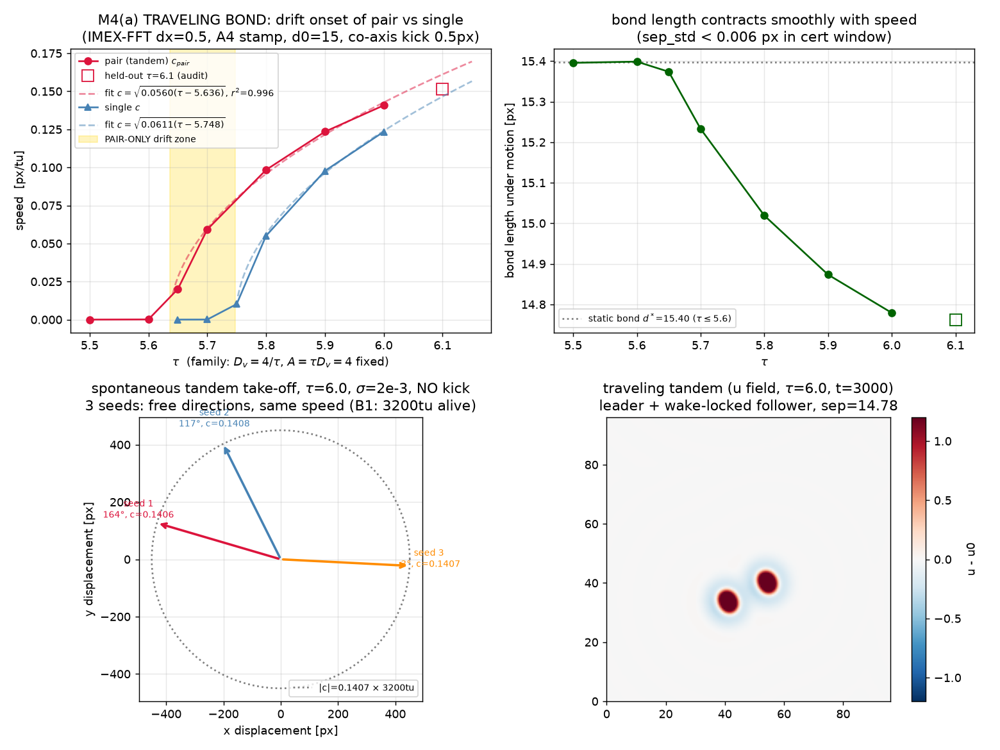
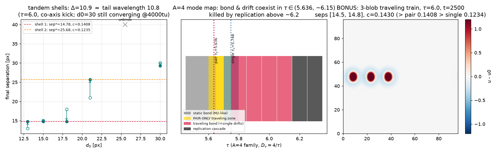
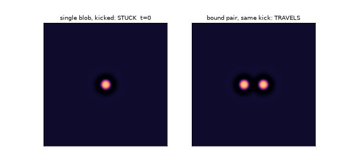
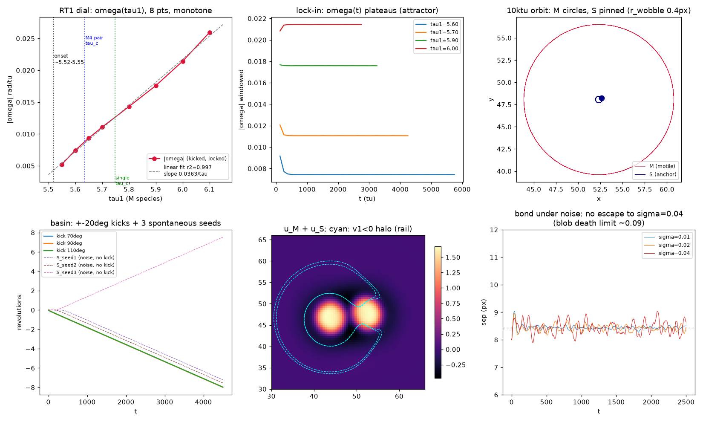
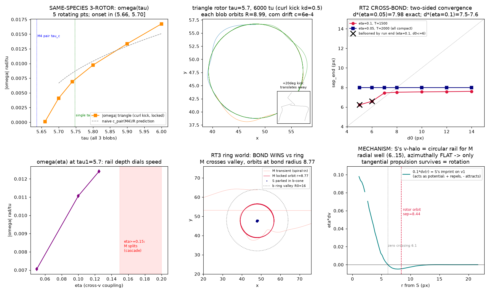
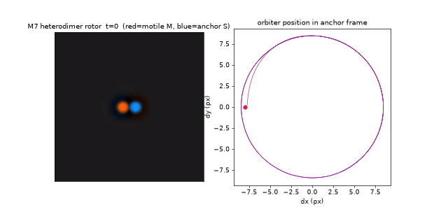

Round-1 left a tension: binding was certified at (Dv=2.0, τ=2.5), motility at (Dv=0.65, τ>4.78) — no overlap. The resolution is a one-line theorem: the steady states depend on τ and Dv only through the product A = τ·Dv (set ∂v/∂t=0: u = v − τDv∇²v). So the whole static world — blob shape, tails, bond wells — is frozen along any path with A fixed, while τ alone dials the drift instability. Binding lived at A=5, motility at A≈3.1. The M4 family holds A=4 (bond exists, slightly shallower: static d*≈15.4) and walks τ up with Dv=4/τ:
The traveling bond is a wake-locked tandem: the pair moves along its own axis, follower surfing the leader's wake at discrete shell distances (14.78 or 25.68 — spaced by the tail wavelength ~10.9). Trains of three go faster than pairs, which go faster than singles (0.143 > 0.141 > 0.123): each blob deepens the collective wake.



M4's honest negative said symmetric pairs refuse to rotate — kicks either lock or convert to translation. The hypothesis: rotation of a symmetric pair is wake-frustrated; the fix is structural symmetry breaking — bind a motile blob to an anchored one, so the tangential push and the pivot are different objects. That needs a bond between species, which the shared-w architecture cannot make (w is monotone-repulsive — quantified no-go). The new xv architecture: each species gets fully private fields (ui, vi, wi) and the only coupling is a weak cross-drive in the slow channel:
Why v? The slow inhibitor's halo is the unique sign-changing mediator: its radial response (measured from the certified stamp) is +1.04 in the core, crosses zero at r=6.1, and has a negative ring over r∈(6,15), minimum at r≈8. Cross-wiring imprints that ring into the partner's own propulsion field: repulsive core, attractive well at r≈8 — a cross-species bond at d*≈7–9 was predicted from this profile before the first run, and measured at 7.5–8.0 (η=0.05: d*=7.976, audited from d₀=12 to the third decimal). The same math predicts the rotor: the anchor's v-halo ring is radially confining and azimuthally flat — a self-assembled circular rail. Put a motile M (τ₁ past drift) on that rail around an anchored S (τ₂=2.5):



Three structural findings around the rotor: (1) a rotor-only zone — it spins at τ₁=5.52, below even the pair-travel threshold (5.636), extending the composite hierarchy: single-static < pair-travel < rotor-spin — each bound structure unlocks motion its parts cannot afford; (2) rotation stabilizes the bond: the static η=0.1 dimer is metastable (balloons at ~1700 tu) while the rotating one is immortal (10k tu) — motion as a stabilizer, the program's recurring theme inverted; (3) mechanism certified by decomposition: with η only in the M→S direction the rotor still spins (S is a passive pivot); with η only S→M it is static. Honest negatives: same-species 3-rotors exist but are knife-edged (±20° kicks fall back to translation — the frustration hypothesis confirmed as a basin property); the engineered ring-valley orbit lost to the bond (at machine-safe ε the cross-bond outcompetes the background ring — the "planet" prefers its tether).
| A | example (τ, Dv) | statics | dynamics along the family |
|---|---|---|---|
| 5.0 | (2.5, 2.0) | deep bond d*=15.70 | can never travel — replication preempts drift (τ≥6.5) |
| 4.0 | (5.7, 0.702) | shallower bond d*≈15.4 | pair drift onset τ_c=5.636; pair-only zone (5.636, 5.748); single onset 5.748; replication ≥6.2 |
| ≈3.1–3.6 | (5.0, 0.65) | single-blob world (M1) | single drift onset τ_c=4.78 |
| 2.53 | engine world | different mechanism class | travels at c=0.20–0.34 (post 7) |
| dial | meaning | measured effect & window |
|---|---|---|
γ | b deposition gain (sign = well/hill) | hill: launch γ*∈(0.002,0.005], c=0.209γ0.341, replication γ≥+0.30. Well: drag −12% @ −0.05; self-trap ≤ −0.07; assembly wells at −0.5 (local depth −0.99 survivable — locality protective) |
τ_b | b relaxation time | trail memory length = c·τ_b (law exact to 0.002%); effects → 0 as τ_b→∞ at fixed γ; fast τ_b=50 raises launch threshold ~4× |
D_b | b diffusion | trades motility for trail range (ℓ=√(D_b·τ_b)): D_b=0.5 parks a γ=0.10 launcher; D_b=2 widens assembly wells 13–38× |
η | cross-species v-drive | bond window [0.05, 0.125]: d*(0.05)=7.976, d*(0.1)=7.5–7.6; ≥0.15 splits the motile blob; 0.3 cascades. ω set by τ₁ at fixed η |